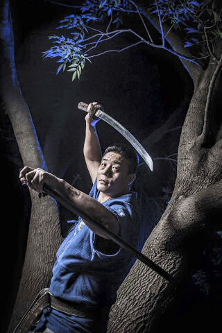

BENEFICIOS QUE APORTA EL HAIDONG GUMDO
- Es una excelente técnica de defensa personal.
- Aumenta los niveles de concentración.
- Mejora tus reflejos.
- Acaba con el estrés.
- La filosofía de esta técnica te ayudará en tu vida diaria.
- En el Haidong Gumdo se requiere el uso de todo tu cuerpo para una
gran variedad de movimientos y desarrollo de técnicas.
- Te ayudará a mejorar tu equilibrio, obtener un mayor tono muscular
y a formar un cuerpo más ágil.
- Te ayudará a adquirir seguridad en ti mismo.
- Haidong Gumdo combina técnicas de respiración y meditación con un
duro entrenamiento para que el individuo aprenda a controlar su cuerpo y su mente.
- Haidong Gumdo es un arte marcial mundial ya practicada en 50 países
y con mas de 1 millón de practicantes que disfrutan sus beneficios.
